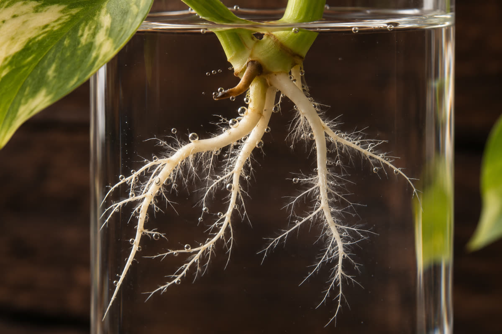
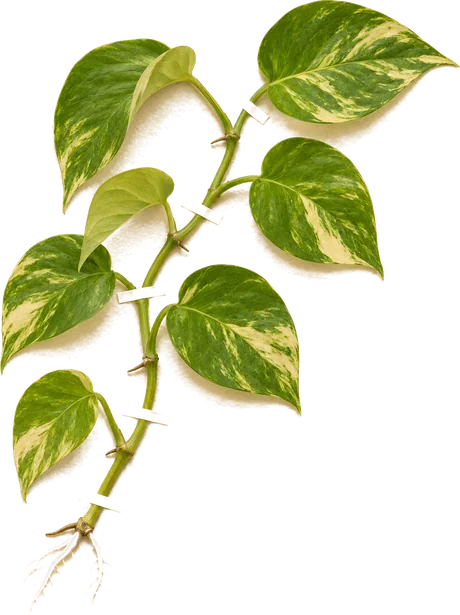
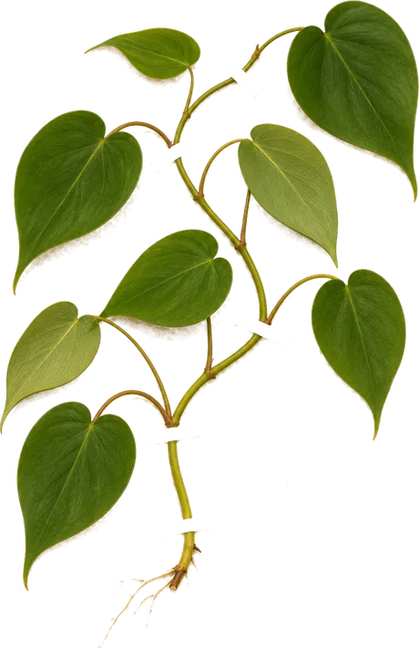
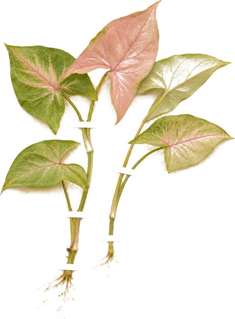
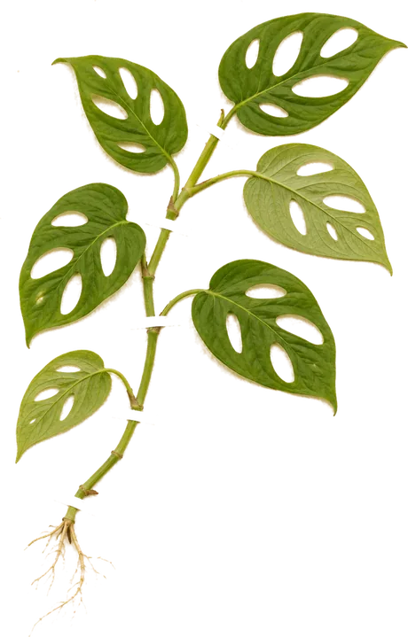
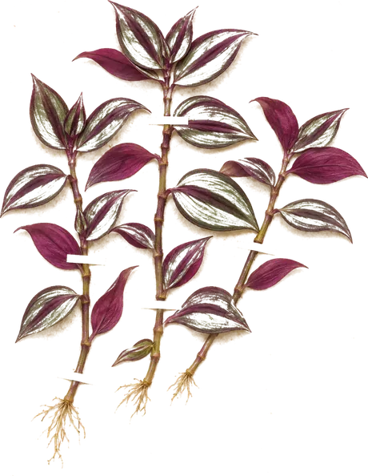
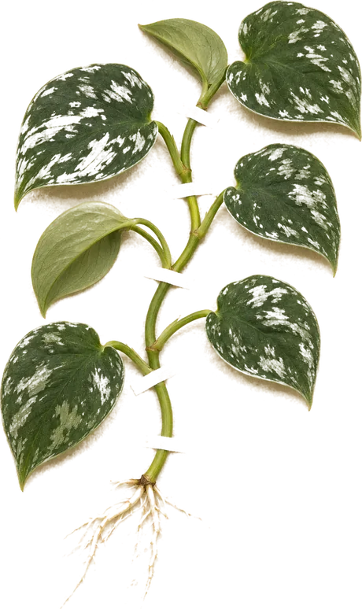
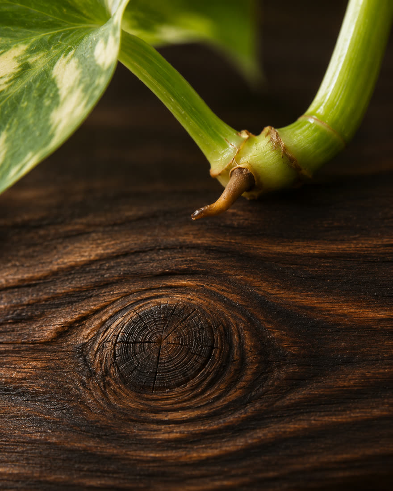

Una planta real
Un esqueje vivo brota de la madera y cambia semana a semana. No hay dos cuadros iguales.
Cuadros que echan raíces: una planta real brota de tu pared, sin tierra ni macetas.
Un esqueje vivo brota de la madera y cambia semana a semana. No hay dos cuadros iguales.
La planta crece en agua, oculta detrás del cuadro. Nada de manchas ni sustrato.
Pegado a la pared, sin soportes a la vista. Rellenar el agua lleva un par de minutos cada dos o tres semanas.
Todo lo que necesitas para colgar tu cuadro y mantener la planta sana. Si has llegado desde el código de la caja, empieza por aquí.
Una pared interior con buena luz, sin sol directo y lejos de radiadores. Entre 16 y 28 °C.
Atornilla a la pared el listón incluido, con los tacos y tornillos de la caja. Usa un nivel para que quede recto.
Con el cuadro de pie sobre una mesa, llénalo despacio con 50 ml de agua como máximo. Usa agua que haya reposado 24 horas, filtrada o de lluvia.
Usa un tallo de unos 15 cm con dos o tres nudos en su parte final, sin hojas en ese tramo. Introdúcelo por el orificio del frontal con suavidad, sin forzarlo. Las primeras raíces salen en dos a cuatro semanas.
Llévalo derecho hasta la pared y cuélgalo en el listón.

El cuadro llega con un esqueje de poto, pero puedes probar cualquier trepadora o colgante que enraíce bien en agua.

La más resistente. Aguanta poca luz. Es la que viene con el cuadro.

Hojas en forma de corazón. Crece rápido.

Hojas en punta de flecha, verdes o rosadas.

Hojas con agujeros. Necesita más luz.

Hojas rayadas o moradas. Enraíza en pocos días.

Manchas plateadas. Crece despacio.
Si no encuentras tu respuesta, escríbenos por Etsy o a hola@nudoartesania.com.
Depende del tamaño de la planta, la luz y la calefacción. Mientras no tiene raíces apenas bebe; después, con revisarlo una vez por semana y rellenar si ha bajado es suficiente.
Lleno con 50 ml, el depósito suele aguantar dos o tres semanas. Para viajes más largos, aparta el cuadro del sol y de la calefacción para que beba menos.
No, siempre que respetes la cantidad máxima de agua: 50 ml. Si alguna vez gotea, descuelga el cuadro y quítale un poco de agua.
Con el listón incluido, dos tornillos y dos tacos. Queda oculto detrás del cuadro y lo sujeta pegado a la pared, sin que se mueva.
Sí, cuando quieras. Puedes poner cualquiera de las plantas recomendadas, o la que tú prefieras que enraíce en agua.
Solo con un paño seco. No la mojes ni uses productos de limpieza: cada pieza tiene un acabado quemado y barnizado único.
Sí, a toda la península desde Madrid, a través de nuestra tienda de Etsy. Los cuadros viajan vacíos y con el esqueje protegido.

Soy Gonzalo y hago cada pieza a mano en Madrid. Siempre me ha fascinado ver crecer algo vivo en un rincón inesperado, y de ahí nació Nudo: cuadros en los que una planta real brota de la madera y cambia contigo, semana a semana. Cada cuadro es único, porque la madera nunca se repite y la planta crece a su manera.
Gracias por dejar que algo crezca en tu casa.
Ver los cuadros en Etsy